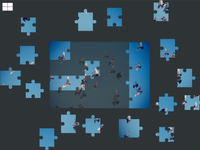

Picsaw
Dieser Artikel wurde für die folgenden Ubuntu-Versionen getestet:
Ubuntu 16.04 Xenial Xerus
Ubuntu 14.04 Trusty Tahr
Zum Verständnis dieses Artikels sind folgende Seiten hilfreich:
Picsaw  ist kleines Spiel, das aus eigenen Bildern ein Puzzle macht. Dabei ist es bewusst einfach gehalten. Beim von Canonical ausgelobten Programmierwettbewerb „Ubuntu App Showdown contest 2012“ belegte es unter 133 Einsendungen den dritten Platz. Der Entwickler von Picsaw, Robert Ancell, zeichnet auch für den Displaymanager LightDM verantwortlich.
ist kleines Spiel, das aus eigenen Bildern ein Puzzle macht. Dabei ist es bewusst einfach gehalten. Beim von Canonical ausgelobten Programmierwettbewerb „Ubuntu App Showdown contest 2012“ belegte es unter 133 Einsendungen den dritten Platz. Der Entwickler von Picsaw, Robert Ancell, zeichnet auch für den Displaymanager LightDM verantwortlich.
Wenn Picsaw irgendwann zu einfach ist, kann man sich Tetzle zuwenden.
Installation¶
 Das Programm ist nicht in den offiziellen Paketquellen enthalten. Zur Installation muss man ein Fremdpaket nutzen.
Das Programm ist nicht in den offiziellen Paketquellen enthalten. Zur Installation muss man ein Fremdpaket nutzen.
Fremdpaket¶
Man lädt ein Fremdpaket  im DEB-Format herunter und installiert es manuell [1]. Der Paketname lautet: picsaw_VERSION~UBUNTUVERSION_ARCHITEKTUR.deb (erfolgreich getestet wurde das Paket für Ubuntu 13.10).
im DEB-Format herunter und installiert es manuell [1]. Der Paketname lautet: picsaw_VERSION~UBUNTUVERSION_ARCHITEKTUR.deb (erfolgreich getestet wurde das Paket für Ubuntu 13.10).
Hinweis!
Fremdpakete können das System gefährden.
Bedienung¶
 Bei Ubuntu-Varianten mit einem Anwendungsmenü erfolgt der Start [2] über den Menü-Eintrag "Spiele -> Picsaw". Unter Unity gibt man stattdessen den Programmnamen in der Dash ein.
Das Spielprinzip ist kinderleicht: man wählt ein Bild aus (vorgeschlagen werden die im Ordner ~/Bilder/ enthaltenen), entscheidet sich zwischen drei Schwierigkeitsstufen und betätigt die Schaltfläche "Mischen". Puzzleteile verbinden sich automatisch, wenn sie zusammenpassen. Mehrere, bereits zusammenhängende Teile kann man als Ganzes verschieben. Zum Schluss bzw. wenn das Puzzle gelöst ist, wird die benötigte Zeit ausgegeben. Über die Schaltfläche kann man dann ein neues Bild wählen.
Wer sehr viele Bilder hat, kann die Auswahl einschränken, indem man den Ordner ~/Bilder/Jigsaw Puzzles/ erstellt (Leerzeichen beachten!) und die gewünschten Bilder in diesen Ordner kopiert. Beim nächsten Programmstart stehen nur die in diesem Ordner vorhandenen Bilder zur Auswahl.
Einziger Nachteil des Spiels: es kann passieren, dass echte Fans den Rechner stundenlang blockieren. Dann ist hoffentlich ein Zweitrechner vorhanden...
 Programmübersicht
Programmübersicht- Erstellt mit Inyoka
-
 2004 – 2017 ubuntuusers.de • Einige Rechte vorbehalten
2004 – 2017 ubuntuusers.de • Einige Rechte vorbehalten
Lizenz • Kontakt • Datenschutz • Impressum • Serverstatus -
Serverhousing gespendet von